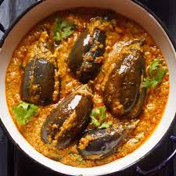

🍆 Bharli Vangi (Stuffed Brinjal)

Ingredients
- 6–8 small brinjals (eggplants)
- 1/2 cup grated dry coconut
- 1 tbsp sesame seeds
- 1 tbsp peanuts
- 1 small onion, finely chopped
- 1 tbsp goda masala or garam masala
- 1 tsp red chili powder
- 1/4 tsp turmeric powder
- Salt to taste
- 2 tbsp oil
- 1 tsp mustard seeds
- 1/2 tsp asafoetida (hing)
- Fresh coriander for garnish
Instructions
- Dry roast peanuts, coconut, and sesame seeds. Let cool and grind into a coarse powder.
- Mix in chopped onions, goda masala, chili powder, turmeric, and salt to form the stuffing.
- Make a criss-cross slit in each brinjal, keeping the stem intact. Stuff the masala into each brinjal.
- Heat oil in a pan. Add mustard seeds and let them crackle, then add hing.
- Gently place the stuffed brinjals in the pan. Add any leftover masala.
- Cover and cook on low flame for 15–20 minutes or until the brinjals are soft and cooked.
- Garnish with fresh coriander and serve hot.
Serve With
- Jowar or Bajra Bhakri
- Steamed rice and dal
- Pickle and curd
💡 Tip: For authentic flavor, use Maharashtrian goda masala and cook in a heavy-bottomed pan on low flame.